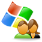
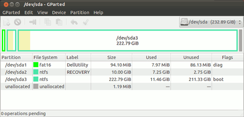
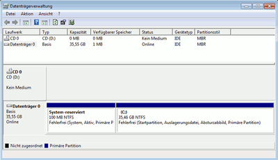
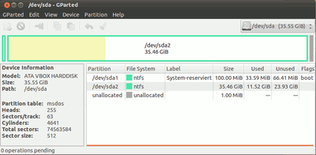
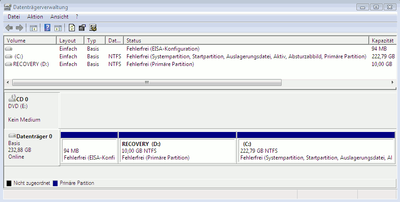

Grundlagen
Dieser Artikel wurde für die folgenden Ubuntu-Versionen getestet:
Dieser Artikel ist größtenteils für alle Ubuntu-Versionen gültig.
Zum Verständnis dieses Artikels sind folgende Seiten hilfreich:
- Was ist eine Partition?
- Welche Vorteile bieten Partitionen?
- Welche Datenträger lassen sich partitionie...
- Wozu benötigt man auf einer Partition ein ...
- Wofür ist die Bezeichnung?
- Warum haben manche Partitionen eine bestim...
- Wie und wo werden Partitionen verwaltet?
- Das Einbinden von Partitionen in das Betri...
- Der Umgang mit Partitionen in der Praxis
- Links
Dieser Artikel richtet sich an Linuxneulinge und Windowsumsteiger. Da man bei der Erstinstallation von Linux unweigerlich mit dem Thema Partitionierung konfrontiert wird, versucht dieser Artikel - für Laien möglichst verständlich - einen kurzen Einblick in diese Thematik und die wichtigsten damit verbundenen Begriffe zu geben. Sofern notwendig, wird dabei auf Unterschiede zwischen Linux und Windows eingegangen.
|  |
| Der Hauptbildschirm des Partitionierungs-Programms GParted ausgeführt von einer Ubuntu-Live-CD (Ansicht durch Anklicken vergrößern). In der tabellarischen Darstellung unterhalb der Grafik fallen einige Fachbegriffe, die im Falle der Live-CD auch noch in Englisch sind. Beim Arbeiten mit GParted kommen zu diesen Begriffen noch einige weitere hinzu. Im folgenden werden die Begriffe daher kurz erklärt. |
Was ist eine Partition?¶
Partition (lat. partitio „Abschnitt, Teil“, engl. partition)
Eine Partition ist ein unabhängiger Speicherabschnitt auf einem Datenträger, der sich von einem wählbaren Anfangs- zu einem festlegbaren Endpunkt innerhalb des Datenträgers erstreckt. Beim Partitionieren wird also die Gesamt-Speicherkapazität eines Datenträgers in einzelne in der Größe und Lage definierbare Bereiche aufgeteilt, die sich dann unterschiedlich und unabhängig nutzen lassen.
Welche Vorteile bieten Partitionen?¶
Die Einteilung eines Datenträgers in Partitionen bietet die folgende Möglichkeiten:
Grundstrukturierung der zu speichernden Daten und die Trennung zwischen Betriebssystem und Daten (z.B.: eine Partition fürs Betriebssystem, eine für private Dokumente, eine für Musik usw.)
Kostenersparnis durch effektivere Nutzung der Gesamt-Speicherkapazität: Möchte man z.B. ein weiteres Betriebssystem installieren, so muss man dafür nicht extra einen eigenen Datenträger anschaffen, sondern man kann freien Platz auf einem bereits im Einsatz befindlichen dafür abzweigen.
Verwendung unterschiedlicher Dateisysteme
Welche Datenträger lassen sich partitionieren?¶
Die folgenden Datenträger lassen sich grundsätzlich in Partitionen aufteilen:
Festplatten - sowohl interne als auch externe
Solid State Discs (SSD)
Folgende Datenträger lassen sich ohne Einschränkungen unter Linux und mit Einschränkungen unter Windows oder auch anderen elektronischen Endgeräten mit mehreren Partitionen nutzen:
Flash-Speicher-Medien, wie USB-Sticks und unterschiedliche Speicherkarten (CF, SD usw.)
Windows kann bei diesen Datenträgern nur mit mehreren Partitionen umgehen, sofern sie nicht als "Wechseldatenträger" in der Datenträgerverwaltung aufgelistet werden. Ob ein Datenträger von Windows als Wechseldatenträger oder als Basis-Datenträger erkannt wird, hängt von einer in der Firmware des Datenträgers gesetzten Eigenschaft - dem sog. "Removable Media Bit" - ab.
Unter Linux partitionierter Flash-Speicher-Medien, die von Windows als Wechseldatenträger erkannt werden, zeigen unter Windows nur eine Partition an. Gleiche Einschränkungen können sich ergeben, wenn man in mehrere Partitionen unterteilte Flash-Speicher-Medien in anderen elektronischen End-Geräten wie z.B. Autoradios oder Digitalkameras verwendet.
Generell nicht partitionierbar sind die folgenden Datenträger:
Optische Medien wie CD und DVD
Disketten
Wozu benötigt man auf einer Partition ein Dateisystem?¶
Dateisystem (engl. file system)
Man stelle sich eine Partition als einen sehr großen leeren Lagerraum vor. Diesen Raum ohne weitere Organisation mit Gegenständen bis unter die Decke zu füllen würde wenig Sinn ergeben und wäre zuweilen auch recht umständlich - insbesondere wenn man die Gegenstände auch immer wieder aus dem Raum herausholen und anschließend wieder einlagern muss.
Deswegen schafft man in einem Lagerraum eine bestimmte, dem Verwendungszweck dienliche Organisationsstruktur, indem man z.B. Regale darin aufstellt, diese dann nummeriert und den Einlagerungsvorgang in die Regale entsprechend katalogisiert. So kann man die Gegenstände geordnet ablegen, was den Vorteil hat, dass man sie schnell wieder findet und schnell aus dem Lagerraum entnehmen und später wieder geordnet ablegen kann.
Ebenso verhält es sich mit Partitionen. Bevor sie der Anwender oder das Betriebssystems mit Daten befüllt, muss auf der Partition erst eine vernünftige, zweckdienliche Organisationsstruktur eingerichtet werden. Diese nennt man Dateisystem. Dateisysteme gibt es dabei verschiedene. Die Wahl des Dateisystems hängt dabei davon ab, welchem Zweck die Partition dienen soll. Details dazu beschreibt der gleichnamige Artikel.
Das Einrichten eines Dateisystems wird "Formatieren" genannt.
Man muss während des Partitionierens nicht unbedingt ein Dateisystem angeben. Man kann stattdessen die Partition auch nur der Größe nach einrichten und dabei unformatiert lassen. Gerade im Zusammenspiel von Linux und Windows auf einem Computer kann es z.B. zweckdienlich sein, das Erstellen von Windows-Partitionen von Linux aus zu erledigen, das eigentliche Einrichten des Dateisystems dann aber Windows selbst zu überlassen.
Wofür ist die Bezeichnung?¶
Bezeichnung (engl. label)
Mit einer Bezeichnung kann man einer Partition eine frei wählbare Beschreibung geben. Der Vorteil einer solchen Bezeichnung besteht darin, dass sie - gerade bei der Nutzung verschiedener Betriebssysteme - enorm hilft, Partitionen zu unterscheiden. Denn die Bezeichnung ist eine der wenigen Informationen, die Betriebssystem-übergreifend sowohl in Partitonierungs-Programmen als auch in den Datei-Managern angezeigt wird.
Bei Nutzung mehrere Betriebssysteme wird daher unbedingt angeraten, Partitionen mit einer eindeutigen und einmaligen Bezeichnung zu versehen.
Warum haben manche Partitionen eine bestimmte Markierung?¶
Markierung (engl. flag)
Trägt eine Partition eine Markierung, so wird Ihr damit ein bestimmter Status bzw. Eigenschaft zugewiesen. Die beiden im Zusammentreffen von Windows und Linux am häufigsten auftretenden Markierungen sind:
Start¶
Start (engl. boot)
Die Start-Markierung zeigt an, dass sich auf dieser Partition Dateien eines Betriebssystems befinden, die unbedingt dazu benötigt werden, das betreffende Betriebssystem zu starten.
Während die Start-Markierung für das Starten eines Linux-Systems nicht notwendig ist, wird sie für das Starten von Windows unbedingt gebraucht.
Unter Windows heißt die Start-Markierung "Aktiv" (engl. active).
Versteckt¶
Versteckt (engl. hidden)
Mit der Versteckt-Markierung weist man Betriebsysteme, die auf den Datenträger zugreifen an, die betreffende Partition außer Acht zu lassen. D.h. von einer Partition, die die Versteckt-Markierung trägt, können weder durch den Anwender noch durch das Betriebssystem Daten gelesen noch können Daten auf ihr abgelegt werden.
Achtung!
Der Begriff "versteckt" darf hier nicht dahingehend missverstanden werden, dass Daten auf einer als versteckt markierten Partition besonders in dem Sinne geschützt werden, dass man sie auf diese Art neugierigen Blicken Dritter entziehen könnte. Denn man muss die Versteckt-Markierung mit einem Partitionierungs-Programm einfach nur wieder entfernen, um auf die betreffende Partition zugreifen zu können!
Einen praktischen Anwendungsfall zu dieser Markierung beschreibt auch der Artikel Multi-Boot.
Wie und wo werden Partitionen verwaltet?¶
Partitionen werden in einem standardisierten Bereich in der Regel am Anfang des zu partitionierenden Datenträgers verwaltet. Wie groß der Verwaltungs-Bereich ist und wie die Organisation der Partitionen im Detail aussieht, hängt von dem Standard ab, der für das Partitionieren gewählt wurde, denn es gibt nicht nur einen Standard.
Bei den Partitionierungs-Standards spricht man im Fachjargon von Partitionierungs-Schemata oder verkürzt von Partitionstabellen. Die beiden für Linux und Windows bedeutendsten Schemata sind das MSDOS-Schema und das der GUID-Partitions-Tabelle (kurz GPT). Ersteres war lange Zeit vorherrschend und ist auch heute noch überwiegend anzutreffen, aber das GPT-Schema gewinnt insbesondere seit der Einführung von Windows 8 zunehmend an Bedeutung.
MSDOS-Schema¶
Beim MSDOS-Schema befindet sich der Verwaltungsbereich ganz am Anfang im aller ersten Datenblock des Datenträgers. Dieser Datenblock wird als Master-Boot-Record (kurz MBR) bezeichnet. Er enthält unter anderem die Partitionstabelle. Aufgrund der Lage im MBR wird diese Partitionstabelle auch Master-Partition-Table (kurz MPT) genannt. Die maximal unterstützte Größe eines Datenträgers mit 512-Byte Sektoren beträgt bei der MPT 2 TiB (Terabyte).
Primäre Partitionen¶
Die MPT bietet platz für vier Verwaltungsdatensätze. Daher lassen sich auf einem Datenträger, der dem MSDOS-Schema folgt zunächst vier Partitionen einrichten. Diese vier Partitionen werden als primäre Partitionen bezeichnet.
Erweiterte Partition und logische Partitionen¶
Da für viele Anwendungsfälle mehr als 4 Partitionen nötig sind, wurde dieses System nachträglich erweitert. Damit ist es möglich, eine der 4 primären Partitionen (Hauptpartitionen) als "erweiterte Partition" zu markieren. Die erweiterte Partition ist also eine spezielle Form der primären Partition. Sie dient als Container für weitere Partitionen (Unterpartitionen) - die man innerhalb der erweiterten Partition logische Partitionen oder häufig auch logische Laufwerke nennt.
Wird eine primäre Partition als erweiterte Partition genutzt, so enthält sie stets mindestens eine logische Partition.
Der Unterschied zwischen logischen und primären Partitionen liegt darin, wie sie auf dem Datenträger verwaltet werden. Logische Partition werden nämlich nicht innerhalb des MBR verwaltet, sondern in Datenblöcken innerhalb der erweiterten Partition, wobei es pro logischer Partition einen Datenblock für die Verwaltung gibt. Davon abgesehen dienen sie aber ganz genauso der Unterteilung des Datenträgers in Abschnitte, wie auch die primären Partitionen.
Unter Linux können auf am IDE-Anschluss angeschlossenen Datenträgern bis zu 60 logische Partitionen erstellt werden. Auf Datenträgern am SATA-Anschluss jedoch nur 12.
Unter Windows kann grundsätzlich eine beliebige Zahl von logischen Partitionen erstellt werden, sofern die erweiterte Partition ausreichend Platz bietet.
Nummerierungen von Partitionen durch das Betriebssystem beim MSDOS-Schema¶
Die Nummerierung von Partitionen erfolgt bei Linux und Windows auf leicht unterschiedliche Weise:
Linux-Partitions-Nummerierung¶
Die vier Primär-Partitionen werden beginnend mit 1 nach der Reihenfolge in der MPT nummeriert.
Die erweiterte Partition trägt demzufolge als spezielle Form der Primär-Partition die Nummer des Partitions-Eintrages in der MPT an dem sie erstellt wurde. D.h. sie kann theoretisch jede Nummer von 1-4 tragen.
Die logischen Partitionen werden in der Reihenfolge ihrer Position in den erweiterten Partitionstabellen stets mit 5 beginnend nummeriert. D.h. auch wenn es auf dem betreffenden Datenträger nur zwei Primär-Partitionen gibt, wovon eine die erweiterte Partition bildet, trägt die erste logische Partition trotzdem die Nummer 5 und nicht etwa die 3.
Zu den vollständigen Partitions-Gerätenamen unter Linux siehe auch im entsprechende Abschnitt des Artikels Datenträger.
Windows-Partitions-Nummerierung¶
Grundsätzlich werden alle Partitionen beginnend mit 1 aufsteigend nach der Reihenfolge in den Partitionstabellen durchnummeriert.
Die erweiterte Partition erhält stets die Nummer 0.
Logische Partitionen werden bei der Nummerierung immer erst nach primären Partitionen berücksichtigt. D.h. auch wenn eine logische Partition innerhalb der erweiterten Partition vor primären Partition liegt, weil die erweiterte Partition in der MPT einen Platz vor folgenden Primär-Partitionen einnimmt, so werden die Partitions-Nummern trotzdem erst aufsteigend an die Primär-Partitionen und erst danach an die logischen Partitionen vergeben.
GPT-Schema¶
Die GUID-Partitionstable, kurz GPT genannt, ist eine neuere Partitionsverwaltung, die mit dem (U)EFI-Standard eingeführt wurde. Sie räumt mit den Limitierungen der der MPT gründlich auf, wozu sich Ihr Verwaltungsbereich mindestens über 34 Datenblöcke auf dem Datenträger erstreckt. Bei Bedarf kann dieser Verwaltungsbereich aber auch ausgedehnt werden, wodurch die Anzahl an Partitionen von 128 beliebig erhöht werden kann. Bei Nutzung einer GPT können Datenträger mit einer Größe bis zu 8 Zebibyte verwaltet werden.
Die umständliche Unterscheidung und Unterteilung von primären, erweiterter und logischen Partitionen entfällt bei Nutzung einer GPT.
Für weitergehende Information kann ansonsten auf den sehr guten Artikel GUID Partition Table verwiesen werden.
Das Einbinden von Partitionen in das Betriebssystem¶
Damit Partitionen oder genauer die auf ihnen befindlichen Dateisysteme vom Betriebssystem oder dem Anwender gelesen und beschrieben werden können, müssen sie zunächst in das Datei-Management eingebunden werden. Man spricht im Fachjargon vom Einhängen (engl. mount) eines Dateisystems. Damit dieses Einbinden für das Betriebssystem überhaupt möglich ist, muss es für das betreffende Dateisystem über einen passenden Dateisystem-Treiber verfügen.
Linux¶
Das Einhängen geschieht unter Linux, indem man die Partition über Ihren Gerätenamen oder der UUID des auf ihr enthaltenen Dateisystems anspricht und in einem Ordner innerhalb der Verzeichnisstruktur eingliedert.
Was sich technisch relativ kompliziert anhört ist in der Praxis in der Regel ein einfacher Klick auf einen Eintrag im Abschnitt Geräte (engl. devices) innerhalb der Seitenleiste des Dateimanagers Nautilus. Dabei gilt jedoch zu beachten, dass in Nautilus weder Geräte-Namen noch UUIDs in der Geräteliste auftauchen, sondern stattdessen Bezeichnungen - sofern vergeben - oder die Größe der Partitionen.
Wurde eine Partition durch Klick im Datei-Manager in das System eingebunden, so ist sie über einen Unterordner im Verzeichnis /media erreichbar. Dieser Unterordner trägt als Namen die Bezeichnung der Partition oder wenn eine solche nicht vorhanden ist die UUID des Dateisystems.
Man kann aber die Dateisysteme der Partitionen auch dauerhaft einbinden, so dass sie bereits mit dem Start von Ubuntu für das Datei-Management bereitgestellt werden. Dabei kann das Dateisystem grundsätzlich an beliebiger Stelle innerhalb der Verzeichnisstruktur - also in einen beliebigen Ordner - eingehängt werden. Ein solch statischer Einhänge-Vorgang erfolgt über einen entsprechenden Eintrag in der Datei /etc/fstab.
Windows¶
Zunächst gilt es herauszustellen, dass Windows standardmäßig nur NTFS- und FAT-Dateisysteme einbinden kann.
Windows bindet technisch betrachtet Dateisysteme ein, indem es den Datenträger über die Disk-Signatur im MBR und die betreffende Partition über Ihre Start-Adresse auf dem betreffenden Datenträger identifiziert.
In der Regel erledigt Windows das Einbinden von Dateisystemen dabei automatisch, wobei für jede eingebundene Partition ein Laufwerksbuchstabe beginnend bei C: zu vergeben versucht wird. Das funktioniert natürlich nur, solange Laufwerksbuchstaben noch verfügbar sind. Für das automatische Einbinden von Partition ist Windows damit auf eine Zahl von 24 Partitionen gleichzeitig beschränkt.
Allerdings ist es auch unter Windows möglich, Partitionen in einen Ordner unterhalb der Windows-Verzeichnisstruktur einzubinden. Das setzt voraus, dass der Ordner zum Zeitpunkt des erstmaligen Einhängens leer ist. Auf diese Art und Weise kann Windows im Prinzip auf beliebig viele Partitionen gleichzeitig zugreifen.
Windows kennt damit zwei Arten von Einhänge-Punkten. Die Laufwerksbuchstaben, die jeweils eine neue Basis für eine eigene Verzeichnisstruktur bilden und dann ähnlich wie bei Linux, das Einbinden von Dateisystemen in eine bereits vorhandene Verzeichnisstruktur.
Unter Windows ist es nicht möglich, Dateisysteme über den Windows-Explorer einzubinden. Das geht unter Windows grafisch nur über die Datenträgerverwaltung.
Der Umgang mit Partitionen in der Praxis¶
Der folgende Abschnitt richtet sich insbesondere an Windows-Umsteiger. Linux-Neulinge, die zuvor noch kein anderes Betriebssystem verwendet haben und einfach nur Linux auf einem Datenträger installieren und dabei die Partitionierung selbst übernehmen wollen seien auf den Artikel Manuelle Partitionierung verwiesen.
Viele Windows-Umsteiger wollen ihre bisher genutzte Windows-Installation und die darin abgelegten Daten zunächst weiter verwenden. Möchten diese dann Linux zu Windows dazu installieren stellt sich zunächst erst mal die Frage, wie man mit der vorhandenen Installation beim Partitionieren umgeht und wie man die Windows-Installation überhaupt sicher identifiziert, damit man sie sich nicht versehentlich löscht.
Im folgenden werden die aufgeworfenen Fragen für Windows mittels der mitgelieferten Datenträgerverwaltung und für Linux anhand des Partitionierungs-Programms GParted beantwortet.
Die Datenträgerverwaltung wird unter Windows aufgerufen, indem man die Tasten
Windows +
R drückt, in das Eingabefeld des Ausführen-Dialogs diskmgmt.msc eintippt und mit
⏎ abschließt.
Hinweis:
Während GParted eine fast nahezu vollständige grafische Umsetzung des Terminal-Programms parted und somit ein vollwertiges Partitionierungs-Programm darstellt, kann man das von der Datenträgerverwaltung unter Windows leider bei weitem nicht behaupten.
Windows bietet zur Partitionierung das Kommandozeilen-Programm diskpart.exe das durch die Datenträgerverwaltung auch nicht nur annähernd erreicht wird. Sobald auf einem Datenträger Partitionen eingerichtet sind mit denen Windows nicht umgehen kann - das sind praktisch alle außer solche mit einem FAT- oder NTFS-Dateisystem - enthält die der Darstellung der Datenträgerverwaltung leider viele Fehler, die es so bei dem Kommandozeilen-Programm diskpart.exe nicht gibt.
Seit Windows-Vista kann man außerdem mit der Datenträgerverwaltung bei Nutzung des MSDOS-Schemas keine erweiterte Partition erstellen.
Wie identifiziert man das Partitionierungs-Schema eines Datenträgers?¶
Bevor man an das eigentliche Partitionieren geht, sollte man sich erst einmal ein Überblick verschaffen, mit welchem Partitions-Schema der vorhandene Datenträger eingerichtet ist. Denn abhängig vom Schema, ist ja die Verwaltung der Partitionen - wie bereits oben geschildert - mehr oder weniger aufwendig.
Will man sich das auf einem Datenträger genutzte Partionierungs-Schema anzeigen lassen, so ist das sowohl unter der Laufwerksverwaltung als auch unter GParted einfach durch Wechseln der Ansicht möglich:
| Datenträgerverwaltung unter Windows | GParted unter Ubuntu |
|  |  |
| In der Datenträgerverwaltung wählt man über das Menü Ansicht > Anzeige oben > Datenträgerliste die Anzeige einer Liste mit Datenträgern für den oberen Bereich im Fenster. Die Spalte "Partitionsstil" offenbart dann das Partitions-Schema auf dem Datenträger. "MBR" steht dabei für das MSDOS-Schema. | Unter GParted wählt man über das Menü View > Device Information die Zusätzliche Anzeige von Geräte-Informationen zum betreffenden Datenträger. Unter "Partition table" wird das aktuelle Partitons-Schema des Datenträgers angezeigt. |
Wie identifiziert man die zu einer Windows-Installation gehörenden Partitionen?¶
Um die für den Betrieb von Windows unbedingt notwendigen Partitionen auf dem Datenträger sicher zu identifizieren, sollte man sich den Datenträger zunächst mit der Datenträgerverwaltung unter Windows anschauen. Denn sie offenbart Informationen, die GParted über die Windows-Partitionen nicht oder nicht zweifelsfrei anzeigen kann.
Die beiden folgenden Bilder zeigen einen Datenträger mit einer typischen Windows-Vorinstallation, der dabei vom Computer-Hersteller nach dem MSDOS-Schema partitioniert wurde:
| Datenträgerverwaltung unter Windows | GParted unter Ubuntu |
|  |
Vorabinformationen zu den beiden Programmen¶
Es gibt eine paar Dinge die man über die Datenträgerverwaltung und GParted wissen sollte, die sich nicht unbedingt aus den beiden Beispiel-Bildern ergeben:
Windows zeigt in der Datenträgerverwaltung alle angeschlossenen Datenträger gleichzeitig an.
GParted zeigt immer nur einen Datenträger gleichzeitig an. Man muss also den gewünschten Datenträger in dem Drop-Down-Menü oben rechts erst auswählen.
Die grafische Darstellung zeigt die Anordnung der Partitionen, so wie sie auf dem Datenträger vom ersten bis zum letzten Datenblock angeordnet sind von links nach rechts aufsteigend. D.h. die Partition ganz links liegt am Anfang des Datenträgers, die ganz rechts reicht bis zum Ende des Datenträgers.
Informationen, die man der Datenträgerverwaltung entnehmen können sollte¶
Die folgenden Informationen sollte man der Datenträgerverwaltung entnehmen können, um bei einer anschließenden Betrachtung mittels GParted darauf zurückgreifen zu können:
Welche Partition wird von der Datenträgerverwaltung als "Start" gekennzeichnet und welche Größe hat diese? Die als "Start" ausgewiesene Partition enthält die eigentliche Windows-Installation - ist also die Partition, in der sich das Windows-Verzeichnis befindet.
Welche Partition wird von der Datenträgerverwaltung als "System" ausgewiesen und welche Größe hat diese? Die von Windows als "System" bezeichnete Partition enthält stets die Startdateien von Windows. Das sind die Dateien die notwendig sind, damit Windows überhaupt gestartete werden kann.
Welche Partition trägt die Aktiv-Markierung?
Welche Partition trägt unter Windows überhaupt einen Laufwerksbuchstaben und gegebenenfalls welchen? Der Laufwerksbuchstabe kann insofern hilfreich bei der Identifizierung sein, soweit eine Partition keine Bezeichnung trägt. Denn im Zweifel sollte Anwender wissen, ob er seine Daten z.B. auf dem Laufwerk D: im Windows-Explorer ablegt. Außerdem ist es bei von Computer-Herstellern vorinstallierten Systemen auch häufig so, dass nur einer Partition ein Laufwerksbuchstabe zugewiesen ist, womit dann schon die Windows-Partition mit dem eigentlichen Windows-System und den Daten identifiziert wäre.
Was folgt aus diesen Informationen für das Beispiel:
Die Windows-Installation befindet sich auf der großen Partition am Ende des Datenträgers (folgt aus Kennzeichnung "Start") und auch die Startdateien von Windows sind dort abgelegt (folgt aus Kennzeichnung "System"). Außerdem ist auf der Windows-Partition noch reichlich Platz (211,33 GiB) vorhanden.
Die Windows-Partition trägt nach Vergleich der Ansichten unter Linux die Partitions-Nummer /dev/sda3.
Die beiden vor der Windows-Partition liegenden Partitionen (DellUtillity und RECOVERY) wären in diesem Beispiel grundsätzlich entbehrlich und könnten somit gelöscht und der frei werdende Platz für eine Linux-Installation partitioniert und genutzt werden.
Alternativ könnte man in diesem Beispiel die Windows-Partiton auch einfach nur verkleinern und in dem frei werdenden Bereich eine erweiterte Partition mit den für die Linux-Installation notwendigen logischen Partitionen erstellen, denn bisher sind auf dem Datenträger erst drei Primär-Partition angelegt. Eine weitere Primär-Partition wäre also noch möglich, ohne die anderen Partitionen löschen zu müssen.
Was tun wenn man auf die Informationen der Datenträgerverwaltung nicht zurückgreifen kann?¶
Kann man auf die Datenträgerverwaltung unter Windows nicht zurückgreifen, weil z.B. Windows momentan gar nicht startet, dann bleibt einem nichts anderes übrig, als die Partitionen alleine mit GParted und einem Linux-Dateimanager zu identifizieren.
Dabei kann man sich an den folgenden Punkten orientieren:
Die Partition, die die boot-Markierung aufweist, sollte die Windows-Bootdateien enthalten, was man mittels Datei-Manager verifizieren kann:
Bei Windows 2000 und Windows XP sollten sich auf dieser Partition die Dateien ntldr, ntdetect.com und boot.ini befinden.
Seit Windows Vista befindet sich auf dieser Datei ein Verzeichnis boot sowie die Datei bootmgr.
In der Regel sollte die größte Partition auf dem Datenträger die eigentlich Windows-Installation nebst Nutzerdaten enthalten. Sicherer ist es natürlich auch in diesem Fall mittels Datei-Manager nachzuschauen.
Bei Windows 2000 und Windows XP sollte sich auf der Partition der Ordner Dokumente und Einstellungen befinden.
Ab Windows Vista befinden sich die Nutzerdaten im Ordner Users. Diesen Ordner sieht man unter einem laufenden deutschsprachigen Windows als Benutzer.
Links¶
Intern¶
fstab: Automatisches Einbinden der Partitionen beim Start des Betriebssystems
Dateisysteme und Datenträger
 Übersicht über weitere Artikel zum Thema
Übersicht über weitere Artikel zum ThemaNotfall
Was tun in Notfällen?
- Erstellt mit Inyoka
-
 2004 – 2017 ubuntuusers.de • Einige Rechte vorbehalten
2004 – 2017 ubuntuusers.de • Einige Rechte vorbehalten
Lizenz • Kontakt • Datenschutz • Impressum • Serverstatus -
Serverhousing gespendet von